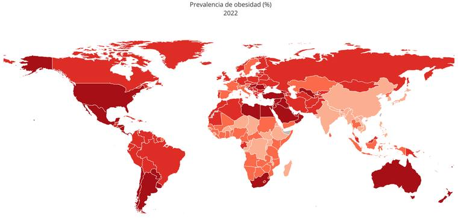

De la obesidad a cualquier dato del Banco Mundial
Nuestro caso de estudio
% de adultos con obesidad, 1990–2022
Paula Farias y Rocío Sanchez Faris · Prof. Ariel Aizemberg
1 · El mundo
La obesidad casi se triplicó en tres décadas
Porcentaje de adultos con obesidad en cada país. Mové el año o tocá ▶ para ver la película completa. Tocá un país para ver su puesto y compararlo con su región y el mundo.
Los países muy pequeños (islas del Pacífico y el Caribe, entre otros) no se ven en este mapa, pero sí están en los gráficos de abajo.
2 · País por país
Los 5 países donde la obesidad afecta a más de la mitad de los adultos
Cada bandera es un país en 2022: cuanto más a la derecha, más adultos con obesidad. Pasá el mouse por una bandera para ver de qué país es, o tocala para elegirlo.
Gráfico de Ariel Aizemberg (el original está en Observable ↗). Banderas: circle-flags.
3 · Dónde están
Las 5 son islas del Pacífico
Son tan chicas que en el mapa del mundo no se llegan a ver, así que las marcamos con un punto. El tamaño del punto indica el % de adultos con obesidad en 2022. Tocá un punto para elegir ese país.
Samoa Americana es un territorio de Estados Unidos; el Banco Mundial publica sus datos por separado.
4 · Las regiones
Todas las regiones suben
Promedio de cada región del Banco Mundial, ponderado por población.
5 · Ingreso y obesidad
Más ingreso, más obesidad… pero no siempre
Cada círculo es un país en 2022. Más a la derecha, más PBI per cápita (escala logarítmica); el tamaño indica la población.
6 · Quién cambió más
Los 15 países donde más subió
Diferencia entre 1990 y 2022, en puntos porcentuales. No es lo mismo pasar de 5% a 15% que de 25% a 35%: por eso mostramos el punto de partida y el de llegada.
7 · Un país
Ver los datos en una tabla
La obesidad es solo un caso. El Banco Mundial tiene más de 160 bases de datos y miles de indicadores, y el mismo código sirve para cualquiera.
1 · Elegí un tema
El mismo código, cualquier indicador
Cada ficha es un indicador del Banco Mundial; la línea muestra el promedio mundial desde 1990. Si no está el que buscás, buscalo en el catálogo.
2 · Miralo
3 · La película
4 · Ranking
5 · Cruzalo con otro indicador
Cada círculo es un país; el tamaño indica la población.
Cómo se hizo
Del pedido a la API al gráfico
El mismo dato recorre varios caminos: la API del Banco Mundial, un notebook de Python, este sitio y QGIS.
- API Data360el Banco Mundial publica los datos
- Pythonlos bajamos, filtramos y promediamos
- JSONquedan guardados en el repo
- Vega-Liteeste sitio los dibuja en el navegador
A · La API
Un pedido, una respuesta
Cada indicador tiene un código. Con la base, el código y el país se piden los datos. Este es el pedido del tema y el país que elegiste:
B · Python
Esto sirve para cualquier tema
Lo que hicimos con obesidad se repite igual con cualquier otro tema: cambiás una palabra y obtenés otra historia.
-
Buscar el indicador
La API Data360 permite buscar en todo el catálogo por palabra clave.
-
Traer la serie completa
Todos los países y todos los años. La API devuelve hasta 1000 filas por pedido, así que vamos paginando.
-
Visualizar
En Python con Altair (como en este sitio, que usa Vega-Lite), en Observable o en QGIS: se cruza con el mapa usando el código ISO3 de cada país.
import altair as alt alt.Chart(df).mark_line().encode( x="TIME_PERIOD:O", y="OBS_VALUE:Q", color="REF_AREA:N", )
C · QGIS
El mismo dato, otra herramienta
- Exportamos la serie de obesidad a CSV, con código ISO3, año y fecha.
- La unimos a la capa de países por código ISO3.
- Le aplicamos una simbología graduada.
- Con el controlador temporal exportamos un mapa por año.

D · Observable
Y en Observable
Los notebooks de Observable del profesor Ariel Aizemberg exploran la misma API con JavaScript, directamente en el navegador.